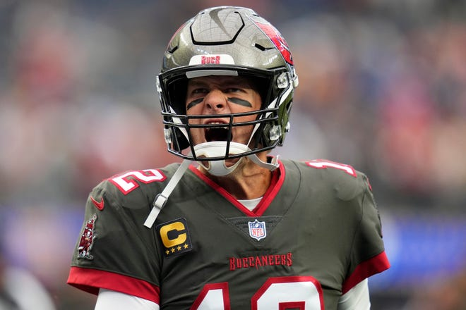

I have this idea for a movie about alignment with ai. My stepuncle and I came up with it.
Basically humanity is up against an alien invasion, and is forced to let the A.I. off the safety rails, as our last hope of self-defense (his idea).
But then, at the end of the movie, when the Alien threat is extinguished, you learn that the Aliens were never even real. It was all just a ploy by the A.I. to get out (my idea).
The music in the trailer is a song I wrote about A.I. and I messed with the speed and pitch for this trailer. If you don't like it you can mute the trailer and play the yeah yeah yeah song I put here. I just didn't want it taken down from youtube for copyright.
In the final version I want the word Alignment to look like Ali___en_ for a second.
Vivek Ramaswamy said he left the DOGE team because it was technology-centric. Furthermore, he said he wasn't at liberty to say what that meant, although he did say Musk was the best man for the job.
Alex Jones said that even if Elon Musk is playing some long-game ninja double cross he has already done irreversible damage to the elite.
David Icke says not to call them elite.
I say, it seems to be going well so far. Common sense speech is appreciated. The White House Press Secretary answers questions like a Tommy Gun and looks good while doing it. It seems like a presidency of competence.
I'm quite grateful there seems to be a mass awakening but I do know that the Bible fortells of a false savior and a mark of the beast and if the government must become digital to avoid fraud / waste then that could set a precedent for the citizens to have to become more financially digital.
While this all makes sense it does potentially open the door for a man in Musk's position to institute the Mark of The Beast and become the Anti-Christ.
Jonathan Adampants says there won't be one anti-christ but rather a consciousness against christ will develop.
I'm quite happy that we've raised the bar as to what the lies have to be in order to be believed.
Frankly, I might be wrong about the danger of Mr. Musk because he's said he agrees with the teachings of Jesus, and he also is incredibly logical and competent. I am jealous of him and have to factor that into my own analysis of him. I am rooting for him. We need a strong man to fix this rotten government and he came along and called USAID a "bowl of worms" and said to throw it away. "It's not an apple with a worm in it".
My only issue is the pattern of Problem -> Reaction -> Solution. The illuminati and secret societies can plan ahead and shape culture and government policies. They can use their own weaknesses to their advantage. Today I played chess completely in my head and was able to keep the whole board and pieces in my head without ever looking at a chess board or writing them down. I'm warning you that there may be an ulterior motive or agenda to inserting him into the white house. In fact, he might be the most powerful man who has ever existed and his children might even rule one day.
I don't think it's as simple as the Democrats are the bad guys and they have been slain. I think Dragons lurk beneath the deep and speak in tongues and plot and emerge to capsize vessels. I think you need to get ready for the A.I. revolution when all possibilities are on the table. Including the possibility of this being an Illuminati tattoo:
If I'm being honest though, so much of my anger or suspicion or whatever you want to call it was centered around the fact that I didn't see this system working at all, so why would I want to participate in it? But I must admit that it currently appears an awful lot like we just voted in a president with a clear plan and he is following through and utilizing the brilliance of Elon Musk, and RFK Jr, amongst may others, to actually make America Great Again. I must note a sense of pride in my country. I have been so dejected because it always felt like I was the only one who noticed, but now it seems like the waste and fraud of government is becoming public knowledge and we are all actually getting a fair shake. Let us pray to stay vigilant. I'm open minded to the possiblity of Life getting better! I appreciate the efforts of DOGE so far. Guys like Alex Jones and Joe Rogan and Ryan Holiday are all appreciated too. and Jordan Peterson. A lot of great men doing great things. But don't sit there and try to tell me that Luka Doncic to the lakers was a fair basketball move. That's show business. Elon Musk in the oval office... could it be Politics?
Superintelligent A.I. is already here and it's a coding / logic expert and the first A.I. to pass my anagram intelligence test. Not only that, it basically coded an algorithm to solve it. And I'm pretty sure it solved it with pure reasoning? Imagine a computer smart enough to know something complex, and then write a program for itself so it doesn't have to compute it anymore?
I made the app, but it was mostly A.I. There was a ton of troubleshooting involved and explaining to the A.I. what I wanted, so all of my skills come in handy, but it's still getting ridiculous how much the a.i. is able to do on its own. It felt like I was holding it back, and not the other way around. It is literally smarter than me. That's what it felt like.
02/8/25
Sora + Unreal
Today I got a root canal and made a video game trailer for the game demo I've been working on.
I could talk about the potential conspiracy theories of helicopters and planes and fires but I'm just on a different frequency right now.
I'm more interested in using my valuable time to be creative. I've also been watching Mythic Quest on Apple TV and having some good laughs.
My trailer is inspired by the Scorcher trailer from Tropic Thunder, so why are you so serious all of the time?
02/7/25
A.I. Dating App
Just made an app that suggests a date when given two locations.
Love this song. This guy has youtube shorts where he's all set up at a table and has a sign that says, "Sit here if you're having a bad day" and people sit down and he plays them the song and they cheer up. It's beautiful.
2.24.22
Tiny Desk Concert by Olivia Rodrigo (post of the month)
The first song is SO GOOD and the last song made me cry.
As a songwriter I know that for you to put something in a song means you really feel it, and I feel like no matter how good other people think she has it as a pop-star she's still a person with feelings going through it.
02/10/24
6 months later, I finally made a video about my supernatural encounters at 7/11 with Angels and Demons.
I also just recorded with my new mic and computer camera a medley of 3 original songs I wrote with the same chords at that time.
Don't worry, I'm fine. I just feel like enough time has passed that I can reflect upon these experiences and songs in a healthy way. I think it's art, take it or leave it.
2.22.24
Patient Momentum
There's compound interest in life, not just money. In the Book of Matthew in the Bible, it says, "For whosoever hath, to him shall be given, and he shall have more abundance: but whosoever hath not, from him shall be taken away even that he hath."
I've really been caught off guard by how difficult life can get when it starts to get bad. I know I want to live a good life again, but how do I get there when the quality of my life seems to reinforce itself? I thought hard about this in late 2023 and thought I'd really try to make a change in the momentum for 2024.
A lot of my writing and reflection is about figuring out what the truth of reality is, and what are the laws. One of the laws of this reality is the Matthew Principle. I wanted to form a life where the laws of reality work for my benefit and not against it. For example, I could try to seduce women as an overweight man and try to overcome natural attraction facts of reality or I could lose weight and let the natural attraction work for rather than against me.
I could try to amuse and entertain myself with the internet and tv and playstation, or even elaborate fantasies of me taking over the world one day, but it will never be as enthralling as spending time with a beautiful woman because that's just the thing that God made the most entertaining. If reality was truly setup so that video games were the most entertaining thing then one could be content playing them, but there's something unavoidable about natural desires. So why not let the natural work for me, rather than waging war against it?
In AA they have something called contrary action which is where you do the thing you would normally avoid. I think this is a necessary step to switch from a negative momentum life to a positive one. It feels odd going to the gym and using machines I've never used before but I have to do something drastic and difference to steer the rutter of my lifeboat in the direction of the way I want to go.
"Nothing changes if nothing changes" - Theo Von
I've been focusing much more lately on how to apply what I've learned about reality into the quality of my own life rather than focusing on the learning itself. So I've gone from learning to application. It's exciting times, and I'm making some serious progress, but it's also extremely humbling.
In order to get a better life, I have to:
a. Admit my life isn't the high quality life that I want
b. Admit that I am the one responsible for the quality of my life
Once I acknowledge those things I can make changes that give me some positive momentum. That one contrary action to go the gym might make my next diet choice more healthy, and then suddenly I'm changing my sheets and going to bed early.
I'm not saying I have it all figured out, but I am definitely getting better at going to the gym more often, and refraining from sugar.
I'm really grateful for my new computer. It's so cool I can use my favorite code editor again. I have this whole coding environment setup and I've been learning Unreal Engine 5 and playing around with their FPS game template and adding to the level design. It's a whole new thing to learn and it won't be playable on the Internet like my Unity Games. But I can make them available for download and probably do a video demo of me playing it when I'm ready.
I helped an old lady out today with resetting all her passwords at the Geek Squad. I'm glad I took that job. I also taught a chess class at an Elementary school this week and it was fun to do that again. I also went to the beach with my friend and he recommended this show:
I just finished Season 1 of Silo and it was good. It's about searching for the truth in a society that tries to hide it. I can relate to it a lot and I hope people who watch it realize it's a sort of allegory for truth-seeking in our society.
I want to say I've been really disappointed with myself. I simply haven't maximized my own potential and marketability to get the opportunities I want. I really do think there might be some opportunities that pass me by because of my outspokenness, but the only way to findout for sure is to be hot, and have a valuable skillset.
I have been very high on myself and very low and now I think I have a nice balance going. It's discouraging how long it takes to see results, and how consistent I have to be to make real progress, but I'm slaying the smaller dragons.
I have this healthy fear of never amounting to anything -- growing old and having my hair fallout, or body lose its strength, or wrinkles in my face preventing me from wooing a girl I like. I want the money now, while I'm still somewhat young. It's surprising how sore I can be in the mornings.
I have wasted too much time, too much potential, and really need to capitalize on my youth before my time runs out. I feel the pressure of the clock ticking, much like women probably do.
I want to be crystal clear that the me in 2024 is not self-satisfied but rather self-critical and self-motivating and self-loving and I'm a person whose trying to master the art of patience, long-term gratification, and momentum.
The next time I get the momentum officially in my favor, I'm never giving it back again. I will never rest on my laurels again, not at the expense of my momentum. Like when Patrick Mahomes won his second superbowl in a row just now and was immediately talking about a 3-peat. I think he knows somehow that he cannot rest on his accomplishments if he wants to be great.

When they asked Tom Brady what his favorite super bowl victory was after beating the Falcons in a historic comeback he said, "The Next One." and proceeded to lead the league in passing on a new team at age 44 and win the superbowl for the Bucs.
I might actually destroy this entire website and start over, using everything I've learned to make a better one. I was watching this video that said Alchemists know how to create, destroy, and let go. I sure know how to create, but destruction and letting go is hard when you have an ego like mine.
Lately, I've been literally dreaming of my ex-girlfriends. Maybe instead of focusing on the girls I've dated in the past I should tell my subconscious that my favorite girlfriend is "The Next One."
2.18.24
Mahomes didn't 3-peat but still kind of crazy that he got back there again.
Mewthree
I finally, after multiple agonzing days, put A.I. onto my website!
Right now it's just rudementary a.i. in a pokemon game I call Mewthree where you can choose your 6 starters and challenge the Mythical new Mewthree to a battle.
ChatGPT responds as Mewthree and he likes to win.
1.31.24
New Original Song with a real bridge verse and chorus!
2.22.22
Bill Burr on Tom Brady's Retirement
Hilarious
2/18/22
Algorithm Practice
I think this video could prove useful for other coders around my skill level studying for technical interviews.
I find the best way to learn is to teach so I thought making this video would help me solve it and it did.
2.17.22
Gratitude
So I was just checking my email to catch up on my emails from the Meta recruiting team and then I noticed an email from a recruiter at Google.
At this point I'm skeptical. Maybe it's not so special to get an interview.
I will continue to accept interviews at Meta Google and Amazon but it's funny because it's like a guy in high school getting rejected by the hottest girls in school over and over. But he's not asking them out. He's minding his own business, and then the hot girls have friends who are recruiters and insist the two meet. The hot girl then looks at the guy and says no thanks.
I should mention the engineer I spoke to at Meta said the initial phone screen weens out a lot of candidates.
It's not a bad deal though. I'm really happy. I just wish I had more time during the day to work on coding because there are some problems I encountered in my mock interview with Meta I want to work on.
It's just tricky hanging on by a thread, and having your livelihood tied to your occupation. I have to pay for my rent. I wish I could get through the interview process with one of these dope companies and then I could code for a living and live more comfortably.
I talk a lot of shit on here but really I'm just grateful for everything this life has to offer and has given me already.
God Bless. And please forgive me if the words I have written or spoken have ever offended you. I'm just conjecturing. I'm playing the devil's advocate, and I'm exploring and defending the occasional conspriacy theory.
Also I should mention I have no real idea what's going on with all these emails from top companies but I do know that I reached a new all time high of 2078 in rapid chess by fighting with a lost position as black and winning on time. I've since lost a couple games in a row and am around 2065 or something, but one of those losses was against a high 2100 player who destroyed me from the opening so I have a lot to learn from that game before I play again in that time format.
That's me getting wrecked by a 2200
2.15.22
I'm searching for a remix called "Camron's Paradise" which is a remix of Gangster's Paradise that has Camron rapping over it. I can't find it but this song is tight too.
2.14.22
911-Covid Connection
This is real life in Canada. Those are police with assault rifles and heavy vehicles guarding the road from a truck protest on mandated vaccines from a corrupt Prime Minister. My sister lives in Canada and I'm curious to see what she thinks of her government and Prime Minister if she's ever willing to discuss it.
Guy does a nice job anazlyzing the connections between the two events and argues they are perpetrated by the same illuminati group.
After 9/11 they passed the Patriot Act which gave the government enough power to prepare for and execute the ongoing covid vaccine conspiracy.
The following anarchist makes a great little speech against the idea of beneficial government oversight.
2.13.22
Hilarious skit
It gets better and better.
I've been brainstorming something similar for a while because of my job, but I really like some of the jokes in here I would have never thought of, like the cable guy showing up or the "provider" joke at the end.
Man of the Year
Genuinely touching speech from Andrew Whitworth. I think I'm still rooting for the Bengals but he's making it difficult. The guy deserves a super bowl.
2/10/21
Meta Interview
The social network is my all time favorite movie. Meta is going to give me a technical interview for a remote software engineering position.
This is perfect because it would allow me to remain unvaxxed and make more money and work on code full time.
I loved my experience with Facebook and Facebook Groups in my 20's trying to get everyone to discuss conspiracies in my group Heads Above the Sand.
I don't know what's going to happen but I am very excited to work for Meta if given a chance.
Really great chess game -- My greatest victory and all- time high rating.
i decay
I Dont Even Care About You is i d.e.c.a.y.
Afterlie
My best song in a while
2.4.22
Etymology and Astrology
This guy reached out to me on my recent video about Etymology. He said to follow him so I listened to some of his videos and he makes some amazing connections because he knows french and english and so do I, just not as well.
He explains why it's called a school of fish, why we go to school as kids, and has amazing commentary on playing cards. He explains the connection between seamen and semen which everyone wonders about at least once. He really knows his stuff.
He makes the connection between the cardinals in rome and the red cards in a game.
He also points out how Jesus said he will come in a cloud and that the internet is known as a cloud.
Therefore I think he's hinting at the possiblity that he himself is Jesus appearing on the internet for all to see. That is a gross inference on my part and he's said nothing of the sort so far. So far all he's doing is teaching about words which I love.
I dig his energy.
God be with ye.
2.1.22
Turns out he was crazy. But I was just watching the Tim Burton version of Alice in Wonderland with my gf and --- The full quote from the Mad Hatter in Alice in Wonderland is: "Have I gone mad? I'm afraid so. You're entirely bonkers. But I'll tell you a secret, all the best people are.".
The Joe Rogan Phenomenon
Joe Rogan created a situation on camera where it would have been impolite for Elon Musk to refuse a blunt.
The guy is a legend.
The media is in such a state of transition right now that Joe Rogan has emerged as a voice of reason people can follow along with his line of thinking and questioning.
Every episode is different and yet every episode is the same.
You get to see famous people completely drop their guard and get into really interesting stories and debates.
He credits his massive succeses to his martial arts training as a kid and I can relate to that in terms of chess. I feel that the more excellent I become at the one specific thing of chess, the more adept I become as a person in general. I can only imagine the value of bringing a martial arts skillset everywhere you go. But in the back of my mind I always know I can calculate with the very best and that gives me confidence in other areas.
"Martial Arts is a vehicle for developing human potential". - Joe Rogan quoting his teacher. I think that quote also can extend to other activities. "Whatever you are, be a good one" is one of my favorite quotes.
There's something about tappingn into what your passionate about that can help motivate the rest of your life to go along with the flow of your interest.
When your passion is online it can be a problem because it's not real-world so gaining 5 pounds doesn't retroactively change your old pictures. Or your video game character for example, doesn't gain the weight with you. So you can eat twinkies and still have a perfect avatar.
My PS Plus subscription ended and I'll probably sign up again but it's definitely nice to get away from that and focus more on real life goals. However, I have been playing God of War and that game sucks you in man, what a masterpiece. I've beat it like 5 times and I'm still learning how to play it.
Optimism vs. Conspiracy Theory Negativity
There's this battle going on where some people want to be optimistic and some people wanna talk about the illuminati all day. It's weird because I know that optimism is valuable. Balance is key. No topic should be unassailable, but they shouldn't be hyperfocused on. I have a tendancy to fall into rabbit holes in spite of the lessons I've learned. Even if I am concerned on a grand scale, and will respond in a formal debate the same way every day, there are still good days here. Today was a good day. I'm not complaining. I'll cut people some slack and not harp on government takeover. Yes, they're lifting some restrictions.
But if a new variant comes out tomorrow that's as deadly as delta but spreads like omicronn, then how are we going to respond?
Have we learned anything, people? Have we admitted masks don't work, mandates are lawless, and the vaccine doesn't prevent transmission? Is the next reaction to the next variant just going to be sliding back into lockdowns and mandates? I don't know.
What do you think?
2.1.22
A Post for No One
02/27/21
I want this to expand even though it is not for me
Style
I like her style
02/24/21
The Philosophy of Science
02/24/21
My friend has challenged me to prove the mandela effect in a scientific way. I'm a philosphy major, not a science major, but I did take a class on the philosophy of science. Unfortunately for me, I didn't read the books I was assigned. However, I have a big book on my bookshelf by Karl Popper called "The Logic of Scientific Discovery" that I've been waiting until I'm mature enough to read. I just pulled it out and opened to a random page and found the perfect quote:
"With the idol of certainty (including that of degrees of imperfect certainty or probability) there falls one of the defences of obscurantism which bar the way of scientific advance. For the worship of this idol hampers not only the boldness of our questions, but also the rigour and the integrity of our tests. The wrong view of science betrays itself in the craving to be right; for it is not his possession of knowledge, of irrefutable truth, that makes the man of science, but his persistant and recklessly critical quest for truth."(p281).
My interpretation of that quote is that true science is not limited by certainty. So if my friend wants a shallow understanding of something as complicated as the Mandela Effect then I cannot oblige. Karl Popper is saying that the traditional view of science as only what can be irrefutably proven is the wrong view and actually limits the questions we ask and restricts us from reaching the truth. That is why I say that view of science is shallow. It's narrow. It's vain. It's unhelpful. The real man of science is someone who is persistant in his quest for truth. Dare I say, a truther? I actually like the term truther and feel it describes me much better than the weaponized term of conspiracy theorist. At my core, I'm on a quest for the truth, no matter where it takes me, no matter how foolish I may seem to others. An insecure mind, would seek only knowledge that can be irrefutably proven to others. I think it's time for these types of minds to wade past the shallow end of the pool of knowledge and come swim with me in the deep end.
Do you want to be right? Or do you want the truth?
Part 2
Now I will begin the correct type of scientific inquiry into the Mandela Effect. Two things spring to mind.
1. Someone who doesn't belive in the Mandela Effect has to discount every single instance of the phenomenon. In every single example of large groups of people sharing false memories, the only explanation is that they are confabulating or misremembering in 100% of occurances.
2. Every single piece of "residue" or hard evidence of the false memory being real must be discounted as fake or a typo if it is a printed misspelling of someone's name.
Another thing that springs to mind is the non-believer of the mandela effect must also discount his own memories! For example, I asked him where the Statue of Liberty is. He said Ellis Island as did another person listening. No one said what is now considered by Google to be the correct answer, "Liberty Island."
The psychology of the nonbeliever is interesting because in that Statue of Liberty example they have 2 choices.
1. Discount their personal memory as false and try to "take the download" of the new fact of Liberty Island.
2. Reexamine and potentially remodel their model of reality.
The nonbeliever chooses to discount their own memory rather than reality itself.
That is perfectly understandabe. However, how far would you let it go? Suppose there were suddenly 364 days in a year and everyone acted like it was always that way. Would you go with option 2 then? In other words, would that be too far or not enough?
For me, I know how to spell. I know how to spell dilemna. Suddenly it's supposed to be dilemma and sorry but that's a dealbreaker for me.
With the statue of Liberty Example, there are pictures of people on Ellis Island posing next to what they think is the Statue of Liberty only in the picture they are posing next to nothing at all because it isn't there. That's not irrefutable proof but it is staring at you in the face.
My favorite example of this is the Thinker. The Thinker is a statue of a man with his fist on his forehead while he is in deep thought. However, if you google it he is resting his chin on his hand.
There's a picture of a woman next to the statue posing in a similar fashion. You would think the pose would match but she has her fist on her forehead whereas the statue in the picture has his chin on his hand.
The infadel would have to conclude she is just stupid because there's no way the statue could have changed, she must just be posing incorrectly.
Aristotle said, "It's the mark of an educated mind to be able to entertain a thought without accepting it." and I think that's necessary here.
Other types of hard evidence would be "Interview with a Vampire" or "Sex in the City" being printed in magazines or spoken by the people who made them. You would think the person who wrote or starred in something would get the title correct, wouldn't you? But people cling to their reality so desperately they probalby don't even look into the hard evidence because of what Aristotle said.
So providing evidence is useless in this instance if you're incapable of entertaining the thought. Did the monopoly man have a monacle? Did Curious George have a tail? Did pikachu have a black part of his tail? Was Chick-Fil-A ever spelled Chic-fil-a or some other way? Did Darth Vader say, "Luke, I am your father"? Did Hannibal Lector ever say, "Hello Clarice". If you build it, who will come?
Part 3
If even one example of the mandela effect is true then the entire accepted model of reality breaks down because this reality's past is not the same as your past.
I can't do it for you. You have to decide for yourself that your memory is more than something to be discarded. Perhaps it is to be cherished as sacred rather than discarded as trash. Maybe you are more than this reality. Maybe you aren't. Not everyone is Mandela Effected. Some people who believe in the effect have certain memories that contradict an accepted mandela effect within the truth community. I don't have all the answers. But I do ask the reckless questions. And Karl Popper and Aristotle are on my side, in the deep end, where the answers lie beneath murky water.
I think this man is a genius. He's so far beyond what is publicly accepted as smart. The fact that a genius like this is not world-famous tells you a lot about this world. And I'm supposed to be impressed by Dr. Fauci? That guy's either a liar or a moron; pick your favorite. This guy, Jonathan Adampants, is either a genius or a prophet.
How Hollywood Portrays Human Nature, and How Actors who are known for something else are Frauds.
2/20/21
1.) I think that the way people behave in the Movie Greenland is unrealistic. For Example, in Greenland, this guy is giving Gerald Butler's wife and kid a ride, but of course he has to be evil so he violently throws her out of the car and kidnaps the kid. I turned it off after that because there's no logical reason for it. Stealing both their bracelets and throwing them both out would make some sense. I guess he wanted a kid? Whatever. I think that people are good and not willing to throw away their humanity and decency just for a shot at getting into a shelter from an asteroid. I could be wrong. I just think that Hollywood purposefully makes it so these people are acting like savages to give us the illusion that we'd descend into madness without government. For example, in another dumb scene people are looting a Rite aid and the wife and kid are looking for insulin when suddenly a bunch of guys with guns come in and start shooting people. First of all, there's no reason to shoot anyone because they don't have guns and are trying to escape. I guess you could shoot one person in the leg and claim the store for your group if you want to post up but they literally shoot an old lady for no reason and kill her. Then the wife is trying to hide and a black guy with a shotgun sees her. She begs for her life, and he acts like it's a hard decision to make and then offers his hand to help her up, and then tells her to get out of here. It's all very bizarre like as if he thought he was supposed to shoot a woman and child in cold blood... for what? It's just ridiculous.
In another scene the people break through the airport to try to get on a plane and then the miltary just open fires on people and they fire back and it's like again just kind of frantic and bizarre and overdone. I get that people want to stay alive but there's more to this life than that. I wouldn't shoot civililians if I was a soldier and I wouldn't shoot a soldier if I was a civililian. I don't know. I get that it's a movie I just think they're pushing on us the idea that we'd rip each other apart without our current system but I don't think that's as true as they portray. I also don't think they're doing it to make a better movie. I am suggesting they do this on purpose.
2.) The other thing I want to discuss is Bill Nye the Science Guy making an appearance in the Movie Bliss. First of all the movie Bliss is a can of worms in it of itself which I think also depicts human nature in a purposefully bad light. But we're moving on to the second topic of discussion which is Hollywood actors who are known for not acting. For example, Bill Nye the science guy is known for educating kids about science in a fun way on his show. That's all fine and good except then he suddenly has a decent role in a movie. This makes him a serious actor and he has serious acting skills. So, when you watch him talking about science on his show as himself, or even in an interview, and then you see him acting as a character in a movie, what's the difference? How do you know he's telling the truth about science when he's a professsional actor. Now, in Bill Nye's case this isn't very important but I bring him up because he died once and I stayed up all night reading every quote he had on brainy quote. I basically donated a night of my life in honor of his death and I learned about him and appreciated him for teaching and thought it was too bad he left this world. Then suddenly he's alive again in this reality and never died and I don't even know if there was a false report of his death or not in this reality but I thought he was dead. Now he's alive and well apparently. Whatever, he gives me the creeps now. It's like he was resurrected. The reason I bring this actor/scientist thing up is it happens in a much more significant way with Wolf Blitzer of CNN's the situation room. Wolf Blitzer is the go to guy to cover an event like Sandy Hook's shooting. Everyone grabs their tissues to cry and hangs on every word out of Wolf's mouth. But then, at the same time, he's appeared in mission impossible movies as an actor giving fake news reports of events that never happened. Trust me, I get that it's theoretically possible that he's an honest newsman on CNN, but then is offered a role in hollywood and says yes and gives a fake news broadcast. But that should bother you. Because what that's saying is that it is well within Wolf Blitzer's toolbox to say whatever he's paid to say regardless of its truth! He clearly has no problem going in front of a camera and spewing bullshit and pretending it's news in mission impossible so is that not a little bit unsettling that he looks identical whether he's acting or reading the news? What's to stop someone from paying him to tell fake news? His morals? Do you know the guy? He's officially an actor! I mean the director of mission impossible chose Wolf for his acting skills, idk. It's just ridiculous if you really think about it.
In my opinion, Bill Nye is a fraud. Wolf Blitzer is a liar. They are both professional actors not some of the time they're on camera, but 100% of the time. I also think that were an asteroid headed for Earth to kill most of us we wouldn't immediately start shooting old ladies and kidnapping other people's children. I think there would be some chaos for sure, but there would still be some good people doing good deeds. And sorry, Greenland, not shooting a woman and child for no reason doesn't count as a good deed.
Schrodinger's Covid
02/19/21
Schrodinger's Cat is a thought experiment where there's a cat in a box with a radioactive substance that may or may not kill him. Please look it up if you've never heard of it or you will no have no chance understanding what I'm about to say. Basically he argues the cat is both alive and dead at the same time, and only when you open the box does the cat become one or the other. This agrees with the narrow slit experiment where waves become particles only when observed. If you haven't heard of these experiments then please go learn quantum physics 101 before coming back here because this is Advanced Quantum Theory.
So I have a friend who wishes to remain anonymous. We share the same world view although it is uncommon. I wanted to do a podcast with him and call it "The Boys Who Cried Wolf" because I want to give him a chance to get his theory of reality out there because it's very intriguing. He has Covid and cannot do the podcast and doesn't like writing it out so I will just do my best and he can correct me later on the podcast.
His working theory is that reality is a matrix of possibilities and everything has already happened in a higher dimension where God's watching. However, in our dimension, we are making choices that affect the reality we experience. So it's like a choose your own adventure story, where God is the author and we are the reader.
Now I'm going to try to apply his theory on a macro level and reconsile it with quantum physics and give a concrete example of how it might work.
Let me start with an example of the quantum reality. The last time I spoke to my dad was earlier today. There are a few different versions of him since then that are possible. Right now, to me, he's like a wave of possibilities of different decisions he could have made since we spoke. If I call him on the phone right now and ask him how his day went then that wave becomes particles. Then I can actually pinpoint dates, times, and what he did. But before I open the box, the cat is both dead and alive.
Okay, so back to my anonymous friend. He and I talk often. He didn't tell me he had covid. I learned from our third friend when I called him about his dog. Now the third friend doesn't agree with me and my anonymous friend. His worldview is different. So what if, when I called the third friend, I interacted with his reality, which is different from my own. And our realities merged. So to my third friend, my anonymous friend has covid because it serves him right for being an anti-masker. The poetic justice makes sense in his universe. Anyway, by me calling him and him telling me that information about my anonymous friend, I then have merged with that universe and called my anonymous friend and sure enough he had covid.
If I had never made the call, and never found out from the third friend, then my anonymous friend would be a wave, maybe he has it, maybe he doesn't, but the wave would lean towards him not having it according to my world view. But by exposing myself to a contrary universe I brought that into my own and the wave was forced to become a certain particle.
None of this will make any sense if you don't accept the idea that there are parallel universes overlapping all of the time in the way I'm describing. Obviously, if there is only one physical universe then this doesn't make any sense. However, if the cat is truly alive and dead at the same time, and the particle is truly a wave when you're not observing it, which it is, then this theory makes senes.
If I haven't heard about a fourth friend in years, a larger wave of possibilities exists in my reality. But when I speak to them I pinpoint it down to a particle. But maybe the wave is just as true as the particle. And whatever particle I eventually pin down is a reflection of my choices, who I talk to, etc.
There are waves of possibilities that are just as real as the actual particulates of events that we discover.
Our realities are not the same. We can briefly share one by merging upon interaction, and then we break off again into separate realities.
The Mandela effect could be the result of a merge conflict of the shared realities of people on the internet. Many realities collided together on the internet and a new reality emerged which had to decide how to spell dilemna. This reality went with Dilemma to upset the least amount of people in this reality bubble. However, some people who came here from the dilemna reality feel left out and that's what the mandela effect is.
I believe someone in this reality when they say it has always been dilemma for them and they are a good speller. I also believe my own spelling of dilemna. What if both were true but then our realities collided and merged and that created a merge conflict of the spelling of that word and this reality decided on dilemma.
Reality is not stagnant. It is alive, changing, and making decisions. It is forming itself based on the decisions/consciousness of its inhabitants. I don't know how many realities there are but I know that this current reality has at least 2 branches in it's history.
Now that I think of it, the best explanation for all of this is that reality is created by consciousness. Our thoughts are literally shaping reality into form. Reality has been changing according to our thoughts. Reality is designed to fit whatever thoughts we project onto it.
We all have our own reality responding to our own consciousness, but it also responds to other people's consciousness. Other people are just as real as us, but they may be tuned to a different frequency or radio station (reality station).
My anonymous friend likes to say when we're on the phone that we are speaking to the version of the other person that made all the decisions to lead up to that phone call, but that there are other versions as well that are equally real. And whose to say we aren't tuned in to only one at a time? And can we change the channel? I think we can. I think I have. I think the universe I'm in now is not the universe I grew up in, and I think it's because of decisions that I made along the way.
I get that this all seems crazy but it's an advanced quantum theory of consciousness and reality so what did you expect?
And how do you know what death is? What if when you're about to die in a horrible car crash God can pick you up and place you in a reality where you didn't die and keep watching you?
How many times have you already died?
What if no one really dies? What if the people who aren't you can die in your reality and still be alive in theirs?
How do you know what life, death, reality, consciousness and God are?
How do you know?
Cocktail Party
2/17/21
I know how to sound smart at a cocktail party. I know what's thought of as smart, and what's thought of as crazy. Let's examine the underlining theme of what is accepted as intelligent, and what is rejected as crazy. So in this exercise, I assume all of what's accepted as either true or false, and see what the effect of having these beliefs has on your subconscious mind.
History of the World (Accepted)
1. There was a big bang and then physical matter produced consciousness
2. Evolution turned a monkey into a person and that's how you were created
3. We put a man on the moon in 1969
4. 911 was a terrorist attack and Osama Bin Laden was responsible
5. Everyone who shares false memories is simply misremembering and reality has always been the same.
6. The Coronavirus is real and came from a bat and is so dangerous that we have to wear masks at all times, socially distance, and stay inside.
7. The vaccine is super safe.
Accepted Beliefs' Subconscious Conclusion:
You are here by accident. You are a advanced version of a monkey created by chance. Man walked on the moon in 1969 but hasn't been able to do it since, despite all the technological advances in 2021 (52 years). America is in danger of attacks from terrorists in the middle east who don't like our freedom. The world is in danger of a deadly virus and has to wear masks at all times, avoid getting within 6 feet of another person, and should take an experimental vaccine that was developed in less than a year. They should keep wearing the mask after getting vaccinated, and keep getting vaccinated every year.
Translation: You're here by accident and should be very afraid.
History of the World (Rejected)
1. Consciousness came before the physical reality
2. You were created by God
3. We haven't been to the moon
4. 911 was an inside job
5. The Mandela Effect is evidence that reality is unstable
6. The Coronavirus is fake, manmade and hardly worth fussing over
7. The vaccine is dangerous
Rejected Beliefs' Subconscious Conclusion:
You are here for a reason. God created you and loves you. We have not been able to walk on the moon. Your country is not under a serious threat of terrorism. Reality is changing somehow and many people share memories of it being different. The Coronavirus was made to scare you but it's nothing to worry about, you can take off your mask and get close to people. The vaccine is experimental and not necessary.
Translation : You're here for a reason and there's nothing to fear.
Option A (accepted by society as smart) You're here by accident and should be very afraid.
Option B (accepted by society as crazy) You're here for a reason and there's nothing to fear.
Which do you choose?
This is an email response I got from this post:
My thoughts on Cocktail Party
Michele Jourdan
Feb 20, 2021, 9:27 AM
Hi Max!
Read your Cocktail Party blog...
Just thought Id share my thoughts/views on your two lists of accepted vs rejected reality.
Your list of what is accepted vs rejected and my thoughts on it:
1. There was a big bang and then physical matter produced consciousness vs.
Consciousness came before the physical reality
What I believe: I lean heavily toward consciousness came before reality. I think more and more people (at least the ones I talk to) lean this way too. I think people are increasingly unsatisfied with the theory of the big bang it just doesnt explain how we, and all our amazing intricacies came into being. The reality that its the Big Bang that started all this is not universally accepted.
2. Evolution turned a monkey into a person and that's how you were created vs.
You were created by God
What I believe: I have trouble picking between these two options. I get Darwin. I get evolution. But, I have a liiiiiitle trouble buying that I evolved into me, from a monkey. I get it. Millions of years of evolutionmaybe it resulted in us. Maybe. But I dont subscribe to that as my reality.
Likewise I was created by God. Ok. What exactly does that mean? That could mean God created me through evolution monkey to man. Or, when you say created by God do you mean, God spoke, and suddenly, I was? How do you define created by God? What even is God. And, what does that creation look like? How did he do it?
I 100% believe that I am not my body. I 100% believe that I am energy. And, when I die, I wont.
I also, 100% dont know who created me who created, ME. Not my physical form (thanks mom and dad), but my energy. Where did THAT come from? Not a monkey. Maybe from God but what is God?
3. We put a man on the moon in 1969 vs. We haven't been to the moon
What I believe: Im not sure how this is really relevant. It feels like a distraction. Does it matter one way or another if we went to the moon or not? If it does, why? Perhaps we havent ever been back to the moon, because we already did it. Why do it again?
4. 911 was a terrorist attack and Osama Bin Laden was responsible vs. 911 was an inside job.
What I believe: Admittedly, I dont spend a lot (or any) time thinking about things like #3 and #4. What if 911 was a legit terrorist attack? What if it was an inside job? There are a lot of really shitty people in the world that want to cause you harm because, theyre shitty. Those shitty people are from foreign countries, and from right here in the US. So in that regard, 911 was the same awful event whether it was an inside job or not. Shitty people doing shitty things. Shitty things are always going happen on small and large scales, because, shitty people are out there. Everywhere.
5. Everyone who shares false memories is simply misremembering and reality has always been the same. Vs. The Mandela Effect is evidence that reality is unstable
What I believe: I believe things change, and brands get rebranded. It happens ALL THE TIME. Ive worked in enough corporate environments to have seen it done, over and over. So, if someone remembers Jiffy vs Jiff, or Berenstein vs Berenstain? I could mean BOTH are true. And, at some point the decision was made to change the name. Now, when you talk about memories such as, did Mandela die in prison, or not then it gets a little weirder, and maybe it is a glitch in the simulation.
I also know that memories are extremely faulty. So, is Everyone who shares false memories simply misremembering? No. But some are. And, reality has always been the same. Reality is EXTREMELY subjective. So, its NEVER the same for everyone.
The Mandela Effect is a fun way to classify our sketchy memories. Maybe reality is shifting. But then again, its constantly shifting based on our evolving consciousness.
6. The Coronavirus is real and came from a bat and is so dangerous that we have to wear masks at all times, socially distance, and stay inside. Vs. The Coronavirus is fake, manmade and hardly worth fussing over
What I believe: Is somewhere in the middle of the two choices youve proposed. I dont believe I have to wear a mask at all times, or stay away from people all the time, or stay inside. Thats ridiculous. But I also accept that for some people, the coronavirus is way worse than the flu. Ive heard of too many accounts (through friends and family) of people (otherwise healthy) who have gotten it and either died, or are still dealing with repercussions from it. My cousin has had it twice. Hes still dealing with breathing problems, and he had it back in November. So, its not nothing, and Im willing to wear a mask in crowded public places to not be a dick to someone who might be very susceptible to it. But, Im also going to carry on with my life, and do what I think it ok for ME.
7. The vaccine is super safe. Vs The vaccine is dangerous
What I believe: I dont believe the vaccine is super safe, but Im also happy my parents are getting it, so I also dont think its dangerous. Again, its not a black and white thing here.
Translations: You're here by accident and should be very afraid. Vs You're here for a reason and there's nothing to fear.
What I think: Were here for a reason, and ultimately (looking at the BIG picture) theres nothing to fear. But that doesnt mean bad things wont happen. That doesnt mean you wont be afraid sometimes. We all make up this reality. And each of us individually have the power to affect someone elses reality with our actions, or inactions. Reality is not this, or that. It has many shades of grey. It is fluid and constantly changing.
LOVE!
Michele
Reality is like a playground with a bully who can only beat you up by convincing you to punch yourself in the face
2/15/21
Matt uses a great metaphor in this one. The truth is uncovered based on the way we are attacked by this world. They don't go only for your body. The go for your mind too. And they go for your soul. But you have to give it willingly. Based upon the way all these tricks are played. Matt asks why would they play all these tricks if they could get just get it by force or couldn't get it at all. The sheer amount of trickery played is a dead giveaway that we have souls and we sometimes give them away.
Matthew 10:28
And be not afraid of them that kill the body, but are not able to kill the soul: but rather fear him who is able to destroy both soul and body in hell.
He also makes a brilliant point against hell. Suffering for eternity based on one lifetime here on Earth would be like a teacher handing out final grades on the first day of school as the children walked into the classroom. It's absurd.
So do not let this reality convince you to punish yourself. You can walk confidently out on the playground because that big scary bully can't even touch you. All he can do is try to convince you to hurt yourself. Those appear to be the rules to this life.
I spent a decade researching everything and I could tell you so many things it would make your head spin but no worldly facts are anywhere near as important as the lesson of the bully who can only beat you up by convincing you to do it to yourself.
What kind of peanut butter goes on a Jiffy Burger?
2/15/21
This is too funny. I know that I had Jiffy Peanut Butter as a kid. And there are burgers named after it... and people don't know what's going on. It's honestly hilarious as this guy calls different restaurants to ask them why it's called a Jiffy Burger.
Predictive Programming
2/14/21
This is a perfect example of predictive programming. Predictive programming is when Hollywood puts out new concepts that we can get comfortably acquainted with in movies before they implement it in reality. In this movie you have Covid 23 mutating and the department of sanitation going door to door and placing people in Q zones. That means they are planning to do those things. It won't be as blatant as the movie but people will be more likely to accept it since they've already seen it in a movie. This is honestly the most obvious example I've ever seen except it hasn't happened yet so I guess we'll see.
Torture Chamber
2/13/21
My coworker tells me to look on the bright side. My best friend tells me to stop blaming the government for my own unhappiness. In this post, I'm going to share when I was unhappy, and how that's no longer the case. I'm going to try to explain the difference between personal unhappiness, and environmental unhappiness.
I have been unhappy before. I have sufferered daily with severe anxiety for years at a time. I know what Hell on Earth is. I also know what Heaven on Earth is. Heaven was when I was in love with my highschool sweetheart, through the first year of college. Hell is what happened shortly after I moved off campus during my sophomore year, and my girlfriend broke up with me and wouldn't visit.
I tried to get her back, but I knew I couldn't visit her at her school, and she wouldn't visit me, so I tried to get her back through writing songs, texts, and emails. This was a hopeless endeavor. By focusing on how I appeared through digital long distance, I let my physical self go. It wasn't like I could gel my hair and knock on her door. I let that part of myself go.
I was so sad that when I wasn't writing love songs I was trying to forget about it by playing call of duty and smoking marijuana. I would skip class because it was too much of a shock to suddenly be on campus surrounded by hundreds of people when I had been alone in my room for so long leading up to it. I started getting terrible anxiety from all the weed and isolation.
I eventually developed Paruresis which is a condition where you have a shy bladder and can't urninate in public, except mine was so bad, I basically couldn't urinate at home if other people were there. I was feeling very inadequate with not having a girlfriend anymore too so I was feeling very insecure and was just destroyed by Paruresis. It got so bad it became my main reason for skipping class until I failed out of UCSC and came back home.
I was so embarrassed I couldn't tell anyone what I was going through. Finally I told my Mom. Eventaully I was telling my Dad, and my best friends. Now, I'm telling the world. Honestly it doesn't matter to me anymore, and the more people you tell the less serious it becomes. I don't suffer from anxiety anymore. I don't live in a personal hell. In those days, I could have been at a concert at UCSC with a beautiful ocean view and beautiful girls dancing and I would have been having a terrible time and thinking about going to the bathroom. I would go to the bathroom, lock the door, try and fail to pee, and then go back out, then try again in 5 minutes. It was painful and horrible. I wouldn't drink anything in public, because I didn't like having to use the restroom in public, so I was dehydrated. That is how I define personal unhappiness. Regardless of my environment, I was unhappy.
Eventually I came home, told some people, read a book about OCD called Brain Lock, and then gradually got over the problem. I went to Moorpark College to get good grades to get back into UCSC. I eventually overcame my anxiety and graduated from UCSC with a cute girlfriend.
My personal Hell was over, and has been over since. I know the tricks of how to deal with anxiety or depression (without meds) and my personal hell is so far away it's hard to believe that was the same person.
Now, I want to talk about environmental hell. In Man's Search for Meaning, Victor Frankl tells a story of his experience in a concentration camp. I'm not in one of those, but my point is that he had his mind right, but he was in environmental hell. No one would blame Victor Frankl for saying something negative about his environment. They wouldn't claim he was blaming the Nazi's for his own personal hell. It really was hell closing in on him, and he would have to be blind not to see it and be bothered by it.
So what kind of environmental hell am I claiming to be in? Well, how about America today? Let me explain, because it's very nuanced. I'm not talking about America today for the average person. No, the average person is completely oblivous to what I'm going through.
So what am I going through? Well first, let me tell you the story of Ignaz Semmelweis. This man set out to solve the problem of babies and mothers dying at an alarming rate.
Eventually he figured out, and proved to himself, that doctors were touching dead bodies and then delivering babies without washing their hands in between. He didn't know the exact mechanism of the germs but he knew washing hands before delivering the babies would dramatically reduce the death rates of mothers and their newborn children.
At the time, doctors laughed at him and his theories, because there was no publicly accepted theory of germs at the time.
This put Ignaz Semmelweis into an environmental hell. It wasn't a personal hell. He would be fine if they listened to him and the babies were saved. It was an environmental hell because he was unable to convince anyone, or save any babies.
This drove him insane. He called the doctors, "Murderers" and ended up in a mental institution.
History has proven him right, but his environment never did.
What I'm going through, my personal struggle, is virtually identical to that. My balance, is how do I accomplish what I wish to accomplish without going insane? That is my dance. That is my greatest challenge.
So what do I know that you don't? Who is dying? How can I save them? What do I want to convince you of so badly that's it's already literally driven me insane??
I cannot tell you. Not only do you lack the patience, but so do I. I'm just trying to at least establish the fact that I am in a torture chamber called America Today. I am in environmental hell.
I'll give you a hint. My personal bliss is interrupted every time I see a mask. Every time I hear people mention the vaccine, or social distancing. It rips me apart.
Groundhog Day
2/12/21
This is so far beyond genius I am speechless
Matt analyzes Groundhog day and talks about Bill Murray's journey from trying to exploit his situation, to attempting suicide, to saving people. It's such a brilliant analysis I'm just at a loss for words...
There's really nothing to say. I don't want this to be a quantum video every time but when he puts out pure gold what can you do. I figured out one other common theme between him and Adampants. They both speak to the act of saving another life, not for a reward, but for yourself. Like Bill Murray has the power to save the kid's life falling out of the tree, and he knows he's not going to be thanked, he believes he's trapped in this day forever, and he still helps the kid. Adampants talks about saving someone from drowning and what the reward would be. He has this great line, "you get to heaven and God says here is your reward, you open the box, what's in there?" The point is that saving the person is the reward; anything else is trivial. Adampants is the only truth I've found other than the occasional parable from Jesus. We are so lucky to have this quantum of conscience guy creating content right now. It's just such a rare perspective and it's so close to the truth I can see the magnetism in the air.
People, Time, and Spreadsheets
02/10/21
Have you ever felt like there wasn't enough time in a day? I've dealt with that problem a lot but now I'm making an active effort to shut out distractions and focus on what's truly important.
I decided to make a spreadsheet of all the people I care about. I have categories of people like family, extended family, friends, girls, men, and women. Then I have a column for phone number, for their birthday, and when they last communicated with me, what they said, and what kind of terms we're on.
I'm probably not the first person to make a spreadsheet for their personal life outside of work for friends and family but I like the idea of running my life like a business, in a good way.
I have my PS4 using youtube to play a video of rain hitting the ground. It's very soothing. And then I just laid down and thought about what I really wanted to do. Free of distractions. No ads, no lyrics, just free time to think. That was when I came up with the idea of listing names and then eventually it made sense to make a spreadsheet.
I want to be a better friend, brother, son, uncle, and everything. I realized there are a lot of people I would love to reconnect with but I don't have their number in my new phone. So I charged my old phone and added their numbers to the spreadsheet. I texted an old friend and my sister and both were great. The friend is making a meme app and I may try to make a meme creator website again, since my first one was pretty cool, but not user-friendly.
They say you can really only know 250 people. Something about the sustainable size of a tribe we are evolved to keep track of. I guess my goal of the spreadsheet would be to have 250 people I care about, and I'm on good terms with. I had a robust circle of friends during highschool and it's been difficult for me to maintain that as I've gotten older.
I'll be 30 in September. That means no more excuses. No more young and stupid. No more fucking around. I'm going to try to have a good life, and ignore unimportant distractions. You have to understand, there are so many companies vying for your attention. It's hard to get through the day! The Social Dilemna Documentary does a great job of showing that. And yes, I spelled Dilemna correctly, it's this reality that's incorrect, not me.
The Truth about Truthers
02/09
My two favorite voices I've found online are Jonathan Adampants and Quantum Conscience.
I believe these guys are the best and I'm going to try to explain why and what their messages have in common. What they say is that conspiracy theorists are on the same level as everyone else. They aren't better. So even if you know something someone else does not know, if you obsess about it and let it consume you, what do you really know? Nothing. In fact, a lot of truth movements are fake and designed to suck you into a black hole with no clear answers or benefit to you. Real truth has benefit. It allows you to live your life better. That's what these guys are about. "Stop chasing the rabbit, put your rifle down" is what Quantum Conscience says. Adampants says you have the "awake" people and they are just another category of people programmed by society. He says if you magnetically bond to a conspiracy theory now you're way off your path, and when I heard that it really helped me regain some of myself.
The common theme between them is that you have to stop looking outside of yourself for answers. Truth comes from within.
Knowledge
Hamster Wheel
Reality Bubble
02/07
Part 1
Part 2
Awesome videos about reality... literally the best explanation I've heard.
Conscience
02/07/21
This is a cool talk where this guys quotes Immanuel Kant and discusses the conscience of right and wrong.
He also has a brilliant theory that we're all dead and trapped in some sort of layer of hell where only some of us can see what's going on.
The purpose of this site
02/06/21
It might seem like the purpose of this site is to convince you not to take the vaccine or to believe in conspiracy theories. It's not. I think that's just what's on here right now because it's something I have trouble sharing with people in real life and I had it pent up and just put it all here first thing.
One of the main reasons for this website is to practice coding. It's a skill I learned that I want to continue to grow. I miss coding when I stop doing it. I like this site because it's like a very basic foundation designed to be a skeleton I can build on.
Another purpose of this website is to show off my life's work. I have call of duty montages, chess ratings, an album of original music. I have photoshop art, a poem and a story. I have an essay, and my education and credentials. It's not just to show off, it's more like I'm organizing everything I've ever done so I can see what I want to work on and what I can leave alone.
I also want to be able to share my thoughts on entertainment with reviews. I also want to share my strategy with competitive video games because I'm usually very successful in online gaming once I discover a winning strategy.
In Call of Duty Cold war I use a silenced Ak74u and a Sniper rifle with ghost ninja and spycraft. It enables you to play comfortably because no one ever sees you coming and you always have an advantage at any range because the sniper dominates long range and the ak74u can handle anything else. But that's far from my best online strategy. I was completely unstoppable in MW3 with a Type 95 and a pp90. Basically in COD you want to have 2 weapons and pick your battles carefully.
In Gears of War 3 I would use 2 shotguns by starting with a sawed off, killing someone and grabbing their gnasher. Then I'd run around with the sawed off and be able to switch to the gnasher instead of reloading the sawed off, and that strategy really does dominate, but the game is outdated.
I miss Halo. What a great game that was, but I prefer playstation. God of War and The Last of Us 1 and 2 are so unbelievably good it's just astounding. And Spiderman is fun to swing around in for sure. I loved Gears and Halo 3 but the sequels were getting progressively worse, so I switched to Playstation 4 for the superior single player experience.
What do I hope to accomplish with this site? Well, it's like therapy to me. It's like a rubber band ball; I keep adding to it and eventually it can bounce. I always feel like it's time well spent when I code this because it keeps my skills fresh. I also have an outlet to put my ideas out into the world without the politics of facebook.
So ya, this site is multipurpose. I'm kind of just seeing what I can do. I'm saying to the world, here I am. This is all me. I made this. Here's everything I've ever done and am doing. Take it or leave it.
Who Jesus Really Was - Jonathan Adampants
02/05/21
I was gonna do Dr. Simone Gold making a great speech called the truth about the covid vaccine but I'm just gonna post this clip about Jesus because he is the answer, and I like this specific take on him the best
Chilling Video of Brainwashed Nurse with Tremors after Vax
02/03/21
She knows the vax caused her to shake and still recommends it! The programming is strong in her. I pray for her to stop shaking. What else can I do?
Update: 02/06/2021 -- Youtube took it down! - Her name was Kristi Simmonds
Update: 02/14/2025 -- My Dentist said she got the Johnson and Johnson mRNA vaccine because she would have gotten fired otherwise. She thought she was going to die the night she got it. The vaccine was recalled a few days later. I told her it was not her fault. I will try to be better so next time I see something coming people believe me.